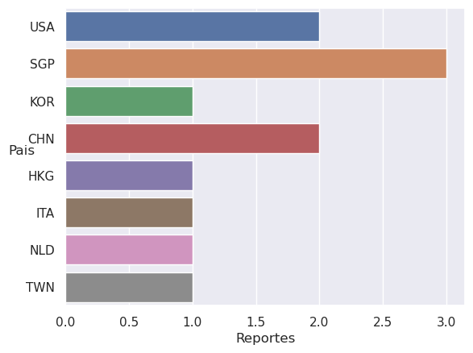

import subprocessAnálisis IPs
1 Análisis de IPs reportadas como atacantes por SSH
1.1 Extracción de IPs
Para la realización de este análisis la cátedra proporcionó una lista de IPs que fueron reportadas por conexiones SSH y ataques DDoS
patron = "[0-9]{1,3}\.[0-9]{1,3}\.[0-9]{1,3}\.[0-9]{1,3}"
!grep -Eo "$patron" data/SSH.txt > data/IPsSSH.txtwith open("data/IPsSSH.txt") as ips:
ipSSH = ips.read()
ipSSH = ipSSH.replace("\n", " ").split()
ipSSH['54.144.244.57',
'188.166.216.223',
'220.94.228.162',
'218.92.0.99',
'116.193.159.2',
'109.117.92.13',
'167.99.112.43',
'89.248.163.219',
'143.198.204.177',
'61.177.173.45',
'8.222.204.225',
'220.135.119.188']1.2 Importamos la implementación de las peticiones a la API
Code
!mkdir modulos
!cp ../app/modulos/abuseIPDB.py modulos/abuseIPDB.py#Importo los modulos necesarios
from modulos.abuseIPDB import AbuseIPDB
import pandas as pd#Construyo el objeto
apiAbuse = AbuseIPDB()#Declaro las keys de la info que devuelve mi implementación de requests
keys = ['esPublica', 'estaEnWhitelist', 'scoreAbuso', 'pais', 'codigoPais']
diccDf = {'ip' : []}
for ip in ipSSH:
diccDf['ip'].append(ip)
info = apiAbuse.getInfo(ip)
for key in keys:
if key in diccDf:
diccDf[key].append(info[key])
else:
diccDf[key] = [info[key]]
df = pd.DataFrame(data=diccDf)
df| ip | esPublica | estaEnWhitelist | scoreAbuso | pais | codigoPais | |
|---|---|---|---|---|---|---|
| 0 | 54.144.244.57 | True | False | 58 | NaN | US |
| 1 | 188.166.216.223 | True | False | 100 | NaN | SG |
| 2 | 220.94.228.162 | True | False | 100 | NaN | KR |
| 3 | 218.92.0.99 | True | False | 100 | NaN | CN |
| 4 | 116.193.159.2 | True | False | 100 | NaN | HK |
| 5 | 109.117.92.13 | True | False | 100 | NaN | IT |
| 6 | 167.99.112.43 | True | False | 100 | NaN | US |
| 7 | 89.248.163.219 | True | False | 100 | NaN | NL |
| 8 | 143.198.204.177 | True | False | 100 | NaN | SG |
| 9 | 61.177.173.45 | True | False | 100 | NaN | CN |
| 10 | 8.222.204.225 | True | False | 100 | NaN | SG |
| 11 | 220.135.119.188 | True | False | 100 | NaN | TW |
import pycountrydf['pais'] = df['codigoPais'].apply(lambda codigo: pycountry.countries.get(alpha_2=codigo).name)
dfgdp = df.copy()
dfgdp['codigoPais'] = df['pais'].apply(lambda nombre: pycountry.countries.search_fuzzy(nombre)[0].alpha_3)dfgdp| ip | esPublica | estaEnWhitelist | scoreAbuso | pais | codigoPais | |
|---|---|---|---|---|---|---|
| 0 | 54.144.244.57 | True | False | 58 | United States | USA |
| 1 | 188.166.216.223 | True | False | 100 | Singapore | SGP |
| 2 | 220.94.228.162 | True | False | 100 | Korea, Republic of | KOR |
| 3 | 218.92.0.99 | True | False | 100 | China | CHN |
| 4 | 116.193.159.2 | True | False | 100 | Hong Kong | HKG |
| 5 | 109.117.92.13 | True | False | 100 | Italy | ITA |
| 6 | 167.99.112.43 | True | False | 100 | United States | USA |
| 7 | 89.248.163.219 | True | False | 100 | Netherlands | NLD |
| 8 | 143.198.204.177 | True | False | 100 | Singapore | SGP |
| 9 | 61.177.173.45 | True | False | 100 | China | CHN |
| 10 | 8.222.204.225 | True | False | 100 | Singapore | SGP |
| 11 | 220.135.119.188 | True | False | 100 | Taiwan, Province of China | TWN |
print(dfgdp["codigoPais"].loc[~dfgdp["codigoPais"].isin(mapa["iso_a3"])])1 SGP
4 HKG
8 SGP
10 SGP
Name: codigoPais, dtype: objectimport geopandas as gpd
import matplotlib.pyplot as plt
mapa = gpd.read_file(gpd.datasets.get_path('naturalearth_lowres'))
Note
Todas estas librerias utilizan convenciones, por lo cual es importante checkear que esten presentes todos los paises que queremos plotear
Code
import numpy as npprint(np.unique(dfgdp["codigoPais"].loc[~dfgdp["codigoPais"].isin(mapa["iso_a3"])]))['HKG' 'SGP']Pude notar que tanto Hong Kong, como Singapur no estan representadas en el mapa mundi por ser ciudades. Por ello, debo cargarlas desde otro dataset
paisesMarcados = mapa[mapa['iso_a3'].isin(dfgdp["codigoPais"])]
fig, ax = plt.subplots(figsize=(15, 10))
mapa.plot(ax=ax, edgecolor='grey', color='lightgrey')
paisesMarcados.plot(ax=ax, edgecolor='black', color='red')
ciudades = gpd.read_file(gpd.datasets.get_path('naturalearth_cities'))
singapur = ciudades[ciudades['name'] == 'Singapore']
hongkong = ciudades[ciudades['name'] == 'Hong Kong']
singapur.plot(ax=ax, edgecolor='black', color='blue')
hongkong.plot(ax=ax, edgecolor='black', color='blue')
plt.show()
import seaborn as snssns.set(style='darkgrid')
sns.countplot(data=dfgdp, y="codigoPais")
ylabel = plt.ylabel("Pais", rotation='horizontal')
plt.xlabel("Reportes")
plt.show()
recuento = df["pais"].value_counts().to_dict()
pd.DataFrame(data={"Pais": list(recuento.keys()), "Reportes": list(recuento.values())})| Pais | Reportes | |
|---|---|---|
| 0 | Singapore | 3 |
| 1 | United States | 2 |
| 2 | China | 2 |
| 3 | Korea, Republic of | 1 |
| 4 | Hong Kong | 1 |
| 5 | Italy | 1 |
| 6 | Netherlands | 1 |
| 7 | Taiwan, Province of China | 1 |